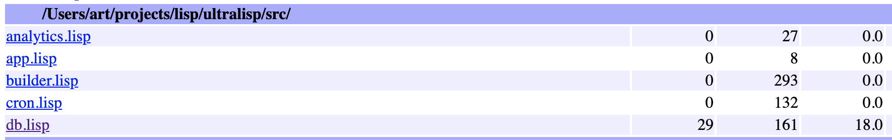
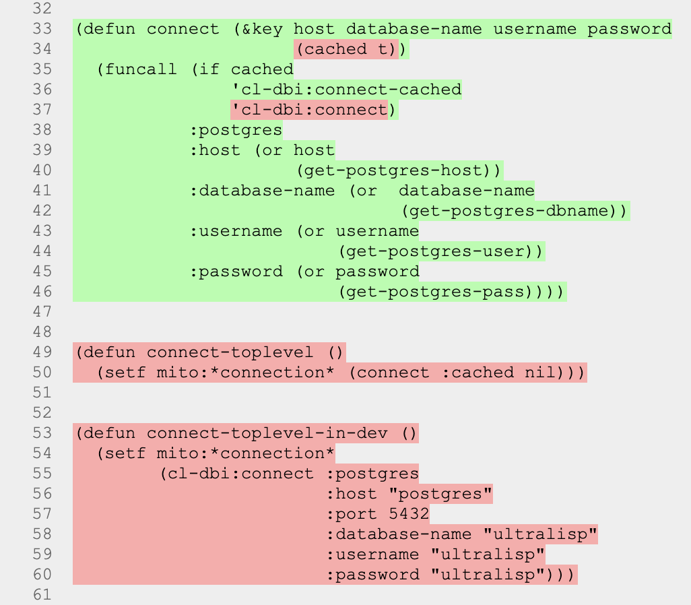

Lisp Project of the Day
cl-coveralls
You can support this project by donating at:


Or see the list of project sponsors.
cl-coveralls
| Documentation | 🤨 |
| Docstrings | 😀 |
| Tests | 😀 |
| Examples | 😀 |
| RepositoryActivity | 😀 |
| CI | 🥺 |
I hope, you are writing unit tests for your program. And if you do, then it is really helpful to know which code is covered by tests and which does not.
Did you know that some CL implementation has tools for measuring code coverage?
For example, SBCL has a package sb-cover. To create a coverage report you need to turn instrumentation on, recompile the program, run tests and generate the report.
This is the code from SBCL's manual:
(declaim (optimize sb-cover:store-coverage-data))
;;; Load some code, ensuring that it's recompiled
;;; with correct optimization policy.
(asdf:oos 'asdf:load-op :cl-ppcre-test :force t)
;;; Run the test suite.
(cl-ppcre-test:test)
;;; Produce a coverage report
(sb-cover:report "/tmp/report/")
;;; Turn off instrumentation
(declaim (optimize (sb-cover:store-coverage-data 0)))Here are few screenshots of HTML pages I've got running sb-cover against Ultralisp's code:


But today we are talking about cl-coveralls. It helps to build coverage measuring into your CI pipeline. I decided that it is a great moment to add make it check Ultralisp's code.
What do you need to collect coverage data of Common Lisp project? Well, you need:
- to set up a CI pipeline on Travis or CircleCI.
- register at https://coveralls.io/ and enable it for your GitHub repository.
- set two environment variables in the CI's config.
- wrap code with a call to coveralls:with-coveralls like that.
Here is the diff, required to enable code coverage measurement for Ultralisp's tests. And now Coveralls will track if code coverage was improved with each pull-request.
Brought to you by 40Ants under